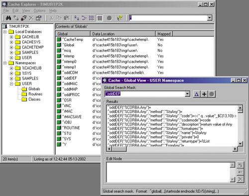

Олег Сиротюк,
инженер по контролю качества компании InterSystems
sirotyuk@intersystems.ru
Реляционные базы данных были очень популярны в 1980-х - казалось, что это идеальный инструмент для описания объектов окружающего мира. В конце века отношение к этой технологии стало более критическим.
Как оказалось, реляционные базы данных очень хороши для традиционных приложений, например, систем резервирования билетов или банковских систем. Однако использование реляционного подхода не столь эффективно в таких приложениях, как АСУП, геоинформационные системы, средства для хранения и извлечения документов, работы с аудио- и видеоинформацией, а также в системах, основанных на знаниях. Это связано с примитивностью структур данных, лежащих в основе реляционной модели. В нетрадиционных приложениях базы данных содержат сотни таблиц, над которыми постоянно выполняются дорогостоящие операции соединения, необходимые для воссоздания сложных структур данных.
Серьезное ограничение реляционных баз данных - их довольно слабые возможности по части представления семантики приложений. В результате на смену реляционным пришли объектно-ориентированные системы управления базами данных (ООСУБД). Первые публикации об ООСУБД появились довольно давно, в середине 80-х гг. Возникновение ООСУБД обусловлено в первую очередь потребностями практики - необходимостью разработки сложных информационных прикладных систем. Развитие ООСУБД тесно связано с развитием объектно-ориентированных языков программирования, которые сами по себе имеют свойства, присущие ООСУБД. Основное достоинство ООСУБД - повышение уровня абстракции. Так, разработчик теперь имеет дело уже не с полями БД, а с понятиями "класс", "объект" и "свойство".
И все же есть соображения, которые удерживают разработчиков от перехода с реляционной технологии на объектную. Основное препятствие для такого перехода - значительный объем существующих разработок на основе реляционных СУБД. При переходе на объектную технологию необходимо многое начинать с нуля. Кроме того, объектная технология, поддерживаемая в ряде постреляционных СУБД, не имеет развитого и стандартизированного языка генерации отчетов и анализа данных, каким является структурированный язык запросов SQL. Данные проблемы были решены в постреляционной СУБД Cache компании InterSystems (http://www.intersystems.ru). Cache обеспечивает реализацию основных возможностей объектно-ориентированной технологии, позволяет во многом облегчить переход с реляционной технологии на объектную и может выступать в роле шлюза к реляционным базам данных.
Отличительная особенность СУБД Cache - независимость хранения данных от способа их представления, что достигается с помощью так называемой единой архитектуры данных Cache. В рамках данной архитектуры существует единое описание объектов и таблиц, отображаемых непосредственно на многомерные структуры ядра базы данных, ориентированные на обработку транзакций*. При этом не используется многослойная структура обработки данных, присущая СУБД - наследникам реляционной или объектной парадигмы (рис. 1). Сокращение количества уровней обработки данных позволяет сэкономить вычислительные ресурсы и значительно повысить быстродействие разрабатываемых приложений.
* См. В. Кирстен, М. Ирингер и др. "СУБД Cache. Объектно-ориентированная разработка приложений". СПб.: "Питер", 2001.
| Рис. 1. Структуры обработки данных.
|
С помощью интегрированного с БД Cache RAD-инструментария разработки приложений Cache Server Pages (CSP) можно создавать Web-приложения любого уровня сложности. При этом можно использовать классы системной библиотеки %Net, которые реализуют все основные сетевые протоколы Интернета и интрасетей: SMTP, POP3, HTTP, FTP и т. д.
Основные компоненты
Рассмотрим подробнее назначение и функциональные возможности основных компонентов системы, архитектура которой представлена на рис. 2.
| Рис. 2. Архитектура системы Cache.
|
TMDM - многомерное ядро Cache
Данные в Cache хранятся в виде разреженных многомерных массивов, называемых глобалями. Количество индексов массива может быть произвольным, что позволяет описывать и хранить структуры данных произвольного уровня сложности. Индексы глобалей не типизированы, т. е. могут принадлежать к любому литеральному типу данных. Синтаксис индексов глобалей достаточно прост: индексы заключаются в скобки и отделяются запятыми. Глобаль отличается от локальной переменной знаком ^. Например, с помощью следующей глобали можно описать количество машин Mercedes SL600 черного цвета на складе:
^car("Mercedes","SL600","black")=10
Скорость доступа к индексированным переменным не зависит от числа индексов, так как глобали хранятся в виде B*-деревьев.
Немного усложняя приведенную структуру описания данных, можно определить все доступные цвета для Mercedes SL600:
^car("Mercedes","SL600","colors")=3
^car("Mercedes","SL600" ,"colors",1)="black"
^car("Mercedes","SL600" ,"colors",2)="blue"
^car("Mercedes","SL600" ,"colors",3)="white"
|
Применение разреженных массивов позволяет оптимизировать использование объема жесткого диска и сократить время выполнения операций ввода-вывода.
В Cache реализована развитая технология обработки транзакций и разрешения конфликтов. Блокировка данных происходит на логическом уровне. Это позволяет учитывать особенность многих транзакций, выполняющих изменения небольшого объема информации. Кроме того, в Cache реализованы атомарные операции добавления и удаления без проведения блокировки.
Сервер Cache Objects
Объектная модель Cache (рис. 3) соответствует объектной модели стандарта ODMG (Object Data Management Group). В соответствии со стандартом в Cache реализовано два типа классов - классы типов данных (литералы) и классы объектов (объекты).
Классы типов данных определяют допустимые значения констант (литералов) и позволяют их контролировать. Литерал не может существовать независимо от своего значения, в то время как объекты имеют уникальную идентификацию.
Классы типов данных подразделяется на два подкласса - атомарные и структурированные. К атомарным литеральным типам в Cache относятся традиционные скалярные типы данных (%String, %Integer, %Float, %Date и др.). В Cache реализованы две структуры классов типов данных - список и массив.
| Рис. 3. Объектная модель Cache.
|
Различают два подтипа классов объектов - зарегистрированные и незарегистрированные. Зарегистрированные классы обладают предопределенным поведением, т. е. набором методов, наследуемых из системного класса %RegisteredObject и отвечающих за создание новых объектов и за управление размещением объектов в памяти. Незарегистрированные классы не обладают предопределенным поведением, разработка функций (методов) для них целиком и полностью возлагается на разработчика.
Зарегистрированные классы бывают двух типов - встраиваемые и хранимые. Встраиваемые классы наследуют свое поведение от системного класса %SerialObject. Основная особенность хранения встраиваемого класса состоит в том, что объекты встраиваемых классов существуют в памяти как независимые экземпляры, однако могут быть сохранены в базе данных, только будучи встроены в другой класс.
Основное преимущество использования встроенных классов - минимум издержек, связанных с дальнейшим изменением набора одинаковых свойств классов, представленных в виде встраиваемого объекта.
Хранимые классы наследуют свое поведение от системного класса %Persistent, который предоставляет обширный набор функций, в частности, создание объекта, подкачку объекта из БД в память, удаление объекта и т. п. Каждый экземпляр хранимого класса имеет два уникальных идентификатора - OID и OREF. OID (object ID) характеризует объект, записанный в БД, т. е. на физическом носителе, а OREF (object reference) характеризует объект, загруженный из БД, который находится в памяти.
Cache в полном объеме реализует все основные концепции объектной технологии: наследование, полиморфизм, инкапсуляцию.
Предусмотрено несколько стратегий хранения объектов в БД - автоматическое хранение в многомерной базе данных Cache; хранение в структурах, определенных пользователем; хранение в таблицах внешних реляционных баз данных, доступных через шлюз Cache SQL Gateway.
Сервер Cache SQL
Наряду с реализацией в полном объеме основных принципов объектной технологии в СУБД Cache поддерживается и структурированный язык запросов SQL для выполнения запросов в соответствии с популярным стандартом. Кроме этого, с помощью единой архитектуры данных Cache можно автоматически преобразовывать реляционные таблицы в классы объектов. При поступлении на сервер Cache SQL DDL-описания реляционной таблицы программа автоматически преобразует DDL-описание во внутреннюю структуру хранения данных и сохраняет полученную структуру в словаре данных. Затем с помощью поставляемых в стандартной комплектации Java- или ODBC-драйверов данные из реляционных таблиц импортируются в многомерные структуры ядра Cache. После этого можно работать с данными как в виде реляционных таблиц, так и в виде классов объектов. Таким образом при переходе с реляционной технологии на объектную разработка не начинается с нуля - Cache многое делает автоматически.
Классы Cache также могут быть представлены в виде реляционных таблиц. Соотношение между разнообразными понятиями объектного и реляционного подходов представлены в табл. 1.
Таблица 1. Объектные и реляционные понятия в Cache
| Объектное понятие | Реляционное понятие |
| Класс | Таблица |
| Экземпляр | Строка |
| Идентификатор объекта (OID) | ID-столбец в виде первичного ключа |
| Свойство-константа | Столбец |
| Ссылка на хранимый объект | Внешний ключ |
| Встраиваемые объекты | Индивидуальные столбцы |
| Коллекция-список | Столбец с полем-списком |
| Коллекция-массив | Подтаблица |
| Поток данных | BLOB |
| Индекс | Индекс |
| Запрос | Хранимая процедура или представление |
| Метод класса | Хранимая процедура |
В таблице не обозначены понятия параметров класса, многомерных свойств и методов объекта, так как в реляционной технологии им нет аналогов. Кроме объектных понятий в Cache поддерживаются еще и триггеры, присутствующие в реляционном представлении.
Доступ к данным с помощью языка SQL продолжает играть важную роль, так как многие существующие приложения и инструменты используют SQL в качестве языка запросов. Для облегчения разработки приложений БД в Cache предусмотрено встраивание SQL в методы и программы. Встроенный SQL может быть использован для реализации сложных запросов к базам данных и для представления полученных результатов запросов в виде значений переменных встроенного языка разработки приложений Cache Object Script (COS). Ниже приведен пример использования встроенного SQL-запроса:
new id, Surname set Surname="Ivanov" &sql(SELECT Id into :id FROM Person where Surname=:Surname) |
Приведенный код ищет по полю Surname таблицы Person поле со значением Ivanov и сохраняет найденный OID объекта в локальной переменной id. Пример демонстрирует использование встроенного SQL-запроса, не основанного на курсоре. В данном случае запрос всегда возвращает только одну строку.
Если же необходимо получить несколько строк из результирующей выборки запроса, следует использовать SQL, основанный на курсоре. Курсор в данном случае служит указателем на одну строку, при выполнении операции FETCH он передвигается к следующей строке.
Сервер прямого доступа к данным Cache Direct
Сервер Cache Direct дает разработчику доступ к многомерным структурам ядра системы. Встроенный в Cache язык программирования COS предоставляет ряд функций для работы с массивами данных, или глобалями, составляющими ядро системы. Прямой доступ к данным позволяет оптимизировать время доступа. Для прямого доступа и работы с многомерными структурами ядра системы можно воспользоваться утилитой эмуляции ASCII-терминала Cache Terminal (рис. 4).
| Рис. 4. Утилита Cache Terminal.
|
Средства администрирования
В стандартной поставке Cache разработчику предлагается два средства администрирования системы - Configuration Manager и Control Panel.
С помощью Configuration Manager можно выполнить следующие функции администрирования.
- Создать новую БД, удалить или изменить настройки существующей БД (с точки зрения физического хранения БД Cache - это бинарный файл CACHE.DAT; для каждой БД создается свой файл CACHE.DAT в отдельном каталоге).
- Определить область (Namespace) для существующей БД, т. е. логическую карту, на которой указаны имена многомерных массивов - глобалей и программ файла CACHE.DAT, включая имена каталога и сервера данных для этого файла. При обращении к глобалям используется имя области.
- Определить CSP-приложение. Для использования CSP-приложений необходимо определить виртуальный каталог на Web-сервере, физический каталог хранения CSP-приложений, а также несколько специфических для CSP настроек, например, класс-предок для CSP-приложений (по умолчанию принимается системный класс %CSP.Page).
- Определить сетевое окружение Cache. В Cache реализован собственный протокол DCP (Distributed Cache Protocol) для работы с сетью распределенного окружения БД. С помощью интерфейсов Configuration Manager можно определить источники данных в сети, а также определить связи между различными компонентами сети.
- Настроить систему Cache. Разработчику предоставляется возможность конфигурирования различных компонентов системы, скажем, параметров журналирования, настроек теневых серверов, параметров сервера лицензий, параметров Cache-процессов и др.
Утилита Control Panel предоставляет схожий набор функций администрирования и добавляет ряд новых:
- управление процессами Cache;
- настройку параметров защиты глобалей, в частности разрешения на редактирование, создание и чтение глобалей различными группами пользователей;
- определение пользователей системы с присваиванием им имен, паролей и параметров доступа;
- просмотр файлов журнала (журналирование в Cache выполняется на уровне глобалей);
- определение теневых серверов системы;
- создание резервных копий баз данных.
Средства разработки приложений
В Cache реализован собственный язык программирования Cache Object Script (COS), представляющий собой расширенную и переработанную версию языка программирования M (ANSI MUMPS).
В первую очередь COS предназначен для написания исходного кода методов класса. Кроме того, в Cache существует понятие Cache-программы. Cache-программа - это не есть составная часть классов, она предназначается для написания приложений для текстовых терминальных систем.
Для создания Cache-программ и классов применяются утилиты Cache Studio (рис. 5) и Cache Architect (рис. 6). С помощью утилиты Cache Studio можно создавать Cache-программы. Для удобства в Cache Studio реализована контекстная подцветка команд, функций и операторов COS.
| Рис. 5. Cache Studio.
|
Утилита Cache Architect предназначена для работы с классами Cache. Разработчику предоставляется ряд мастеров (wizard) для создания новых и редактирования существующих классов, методов, свойств и прочих компонентов классов Cache.
| Рис. 6. Cache Architect.
|
Для доступа к многомерным структурам ядра Cache можно воспользоваться утилитой Cache Explorer (рис. 7). Она предоставляет ряд интерфейсов для просмотра, импорта, экспорта и печати глобалей, классов и программ Cache.
|  |
| Рис. 7. Cache Explorer.
|
Cache Server Pages
Концепция серверных страниц Cache (Cache Server Pages, CSP) предусматривает автоматическое создание по запросу пользователя Web-страниц, содержащих требуемую информацию из БД Cache. Вся бизнес-логика CSP-приложений выполняется в непосредственной близости к хранилищу данных Cache. Благодаря этому сокращается объем данных, которыми Web-сервер обменивается с сервером БД, что приводит к выигрышу в производительности по сравнению с другими технологиями создания Web-приложений. Для дополнительного увеличения производительности CSP-приложений при обмене данными между сервером Cache и Web-сервером используются высокоскоростные интерфейсы API.
Серверные страницы Cache представляют собой текстовые HTML-файлы, расширяемые тегами приложений Cache (Cache Application Tags, или CATs). Можно создавать CSP-приложения с помощью стандартных средств разработки HTML-страниц (Cache предоставляет add-in модуль для полной интеграции с Macromedia DreamWeaver) или обыкновенного текстового редактора.
В листинге 1 приведен пример небольшого CSP-приложения, которое выводит значения свойств объекта, хранящегося в БД Cache.
Листинг 1
<html>
<head></head>
<body>
<script language="Cache" runat="Server">
set obj=##class(Sample.Person).%OpenId(1)
write obj.Name,"<br>"
write obj.Age,"<br>"
do obj.%Close()
</script>
</body>
</html>
|
Разработчик также может создавать собственные теги приложений Cache.
При открытии CSP-страницы в браузере Cache автоматически преобразует CSP-страницу в класс Cache (по умолчанию классом-предком для CSP-классов выступает системный класс %CSP.Page). CSP-класс - это не просто способ представления кода. Это отражение полноценной объектной модели CSP-приложения - вы можете использовать все преимущества объектного подхода, в частности наследование и полиморфизм.
После преобразования CSP-страницы в класс Cache этот класс можно редактировать c помощью Object Architect.
Для изучения CSP рекомендуется рассмотреть примеры, содержащиеся в стандартном комплекте Cache. Для этого необходимо установить Cache и в браузере обратиться по адресу http://127.0.0.1:1972/csp/samples/menu.csp
Версии и поддерживаемые платформы
На момент написания статьи последними версиями СУБД Cache были 4.0 и 4.1.1. На рынке высокопроизводительных СУБД Cache позиционируется как eDBMS, т. е. как СУБД, ориентированная на работу в сети Интернет и интрасетях. Разработчику предоставляется обширный набор функций, реализующих большинство стандартных Интернет-протоколов, таких, как SMTP, HTTP и POP3, имеется также развитая технология разработки динамических Web-приложений CSP. При установке система проверяет наличие Web-сервера и выполняет автоматическое конфигурирование соответствующей подсистемы.
Утилиты администрирования и инструментарий разработки приложений в версиях 4.0. и 4.1.1. схожи, существенные различия касаются лишь формата хранения данных на диске и использования ОЗУ компьютера временными библиотеками. Так, в версии 4.1.1 блок данных, который считывается с диска, может иметь объем 8 Кбайт, в то время как в версии 4.0. максимальный размер блока равен 2 Кбайт. Разумеется, при считывании блоков данных большего размера с жесткого диска сокращается количество операций ввода-вывода, что приводит к повышению производительности системы. Кроме того, в версии 4.1.1 оптимизированы функции журналирования, использования блокировок и других функций.
Список платформ, поддерживаемых Cache 4.1.1, приводится в табл. 2.
Таблица 2. Совместимость Cache 4.1.1.
| Платформа | Операционная система | Unicode | ODBC | SQL- шлюз |
| Alpha | OpenVMS 7.2, 7.3 | + | ||
| Alpha | True64 UNIX 5.1 | + | ||
| HP | HP/UX 11i | |||
| IBM P Series | AIX 4.3.3, 5.1 | + | ||
| Red Hat Linux (Intel) | Red Hat Linux 7.1 | + | + | |
| Sun Solaris (SPARC)* | Solaris 2.8 | + | ||
| SuSE Linux (Intel) | SuSE Linux 7.1 | + | + | |
| Microsoft Windows | Windows 95/98/ME/NT 4 (SP4, SP5, SP6)/2000 | + | + | + |
| *Только для 64-разрядных. | ||||
Cache поддерживает множество национальных языков как на уровне хранимых данных, так и на уровне локализации утилит. Кроме того, специальная утилита CNLS позволяет создавать собственные таблицы трансляции из одного набора символов в другой, задавать различные способы вывода непечатаемых символов и предоставляет ряд других возможностей. При инсталляции в среде Windows Cache автоматически определяет региональные настройки ОС и устанавливает соответствующую схему локализации. Также предоставляется возможность установки Unicode (16bit) версии Cache. Стоит отметить, что для русского языка поддерживаются две таблицы кодировок - Windows-1251 и ISO 8859-5.
Серверные компоненты CSP работают с такими Web-серверами, как MS IIS/PWS, Apache 1.3.12, Netscape/Sun iPlanet 4.0, Compaq Secure Web Server 1.0.
Как уже было сказано, Cache может выступать в роли шлюза к реляционным базам данных (РБД). Официально поддерживаются РБД Microsoft SQL Server (7.0 и 2000) и Oracle 8,9i.
Минимальные требования к аппаратному обеспечению для работы под ОС Windows включают процессор Intel Pentium, 64 Мбайт ОЗУ, 100 Мбайт свободного места на диске, сконфигурированный протокол TCP/IP с фиксированным IP-адресом. Наличие Web-сервера необязательно. Для тестирования CSP-приложений можно воспользоваться встроенным в СУБД Cache Web-сервером. Однако применять его для реальной работы не рекомендуется.
При установке Cache под Windows можно выбрать один из следующих вариантов установки:
- Standard. Устанавливаются сам сервер БД Cache, ActiveX-компоненты, CSP-компоненты, инструментарий разработки и администрирования СУБД, документация.
- Client. Устанавливаются клиентские компоненты администрирования и разработки приложений Cache.
- Custom. Выборочная установка компонентов СУБД Cache.
После выбора варианта установки программа инсталляции Cache запрашивает информацию о размерности кодировки - 8-битовая или Unicode (16 бит). Выбор кодировки целиком и полностью зависит от требований разработчика. Следует помнить, что Cache автоматически конвертирует БД из 8-битового формата в Unicode, однако обратную конвертацию придется проводить вручную.
Завершая знакомство
В статье описана лишь малая часть того, что реализовано в Cache. Помимо описанных интерфейсов система включает ODBC- и JDBC-драйверы для представления данных из СУБД Cache в виде реляционных таблиц и работы с ними. Имеются также стандартные ActiveX-компоненты, которыми можно воспользоваться при создании пользовательского приложения в среде Visual Basic. Кроме того, предоставляется мастер создания форм Cache Form Wizard, облегчающий разработку пользовательских форм в среде Visual Basic.
В Cache реализованы интерфейсы CALLIN/CALLOUT, предназначенные для прямого вызова функций СУБД Cache из программ на C и для вызова функций операционной системы из Cache. Предоставляется интерфейс для работы с функциями DLL- библиотек.
Комплект Cache содержит модуль интеграции со средой проектирования информационных систем Rational Rose. При этом UML-диаграмму классов можно экспортировать напрямую в БД Cache. Разработчик получает возможность создавать описания классов Cache на языках Java или С++.
На середину лета анонсирован выход новой, пятой версии Cache. Бета-версию продукта можно загрузить с сайта InterSystems (http://www.intersystems.com). В ней имеются следующие новшества:
- интегрированная среда разработки Cache Studio с развитым графическим отладчиком. Функции Cache Studio и Object Architect предыдущих версий объединены в рамках единой среды разработки приложений. С помощью графического отладчика можно отлаживать методы классов и программ Cache, а также Web-страниц CSP;
- поддержка XML, а также языков описания XML-структур Schema, DTD. Новая версия поддерживает обмен (экспорт-импорт) данных и структур данных с внешними XML/Schema/DTD-документами;
- поддержка SOAP;
- оптимизация времени выборки данных путем индексирования по технологии BitMap;
- новый язык описания бизнес-логики приложений на сервере - Cache Basic.